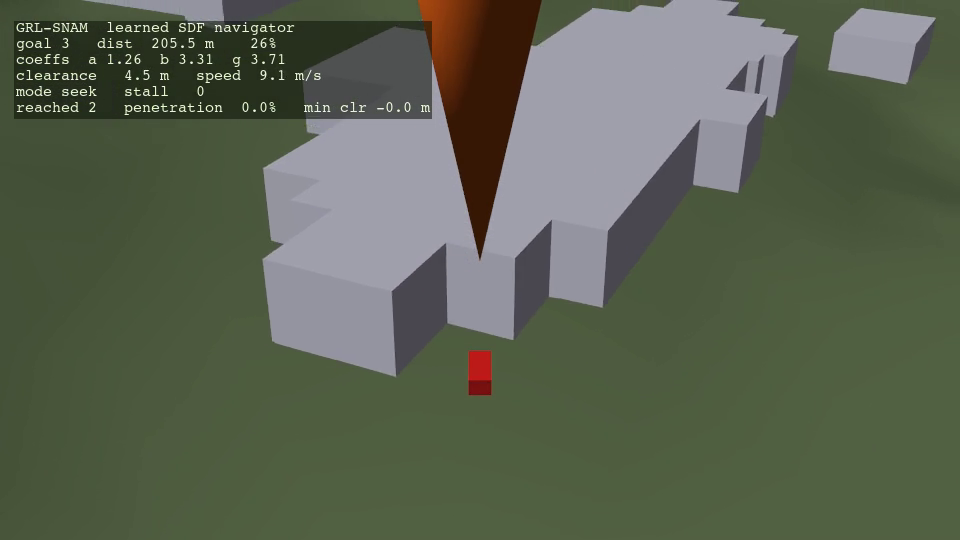
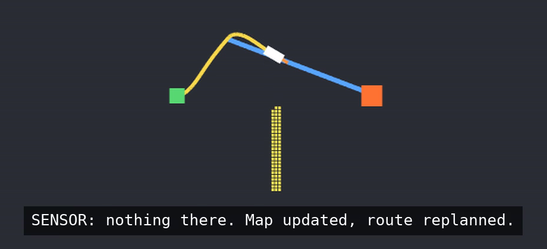
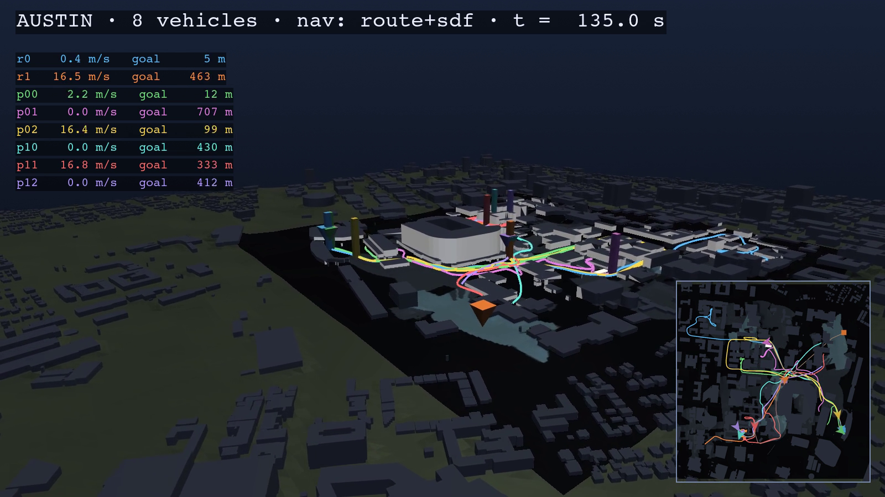

Three demo deliverables, in the order they landed. Each is a self-contained page whose films play inline, and every number quoted on those pages replays from a recorded trace — nothing is re-simulated for display. The July demo drives a learned policy over real Austin geometry; August first takes the map away and makes the agent earn it through a sensor, then scales to a squad whose members must discover each other.

grl-snam pipeline <world_model> takes a raw terrain.json +
buildings.glb bundle through SDF construction and self-supervised training to a rendered
multi-goal free-drive with a live HUD: coefficients α β γ, wall clearance, speed, escape mode, goals
reached — penetration 0.0 %.

The planner runs on a belief map that may disagree with ground truth, updated only by a ray-cast sensor with occlusion; vehicle dynamics give reactions a cost. Three stories — a ghost wall, a mid-drive blocker, a moving unit — all reach the goal with zero collisions, and the ~22 KB trace is the single source the film, the live window and the page replay.
Open the demo page
Eight vehicles in one Austin scene, each with its own belief, route and distance field. Goals can be other vehicles read live: a convoy where only the leader knows the destination, a pursuit where every hunter closes from ~900 m to under 10.5 m, and an eight-vehicle rendezvous — replayed with the fields of view the vehicles actually had.
Open the demo pageThe fog stories are scored against truth, not against the agent's belief:
| story | map updates | detour peak | driven / straight | collisions |
|---|---|---|---|---|
| ghost | 21 | 37.8 m | 143.3 / 120.0 m | 0 |
| blocker | 10 | 20.8 m | 127.3 / 120.0 m | 0 |
| unit | 61 | 13.4 m | 135.4 / 120.0 m | 0 |
At city scale, one local controller runs with or without an A* route spine over the agent's own belief. Driven distance against the straight line, same map and seed:
| map | route + sdf | sdf-only |
|---|---|---|
| blocker | +6 % | +237 % |
| traffic | +3 % | +252 % |
| Austin | +14 % — arrives | never arrives |
The direction flips with map complexity: on one obstacle the spine is a tax; on a real city the reactive controller sits in a local minimum. Zero collisions either way — the difference is arrival.
docs/PERFORMANCE.md, and CUDA measurably loses to the CPU at this scale.